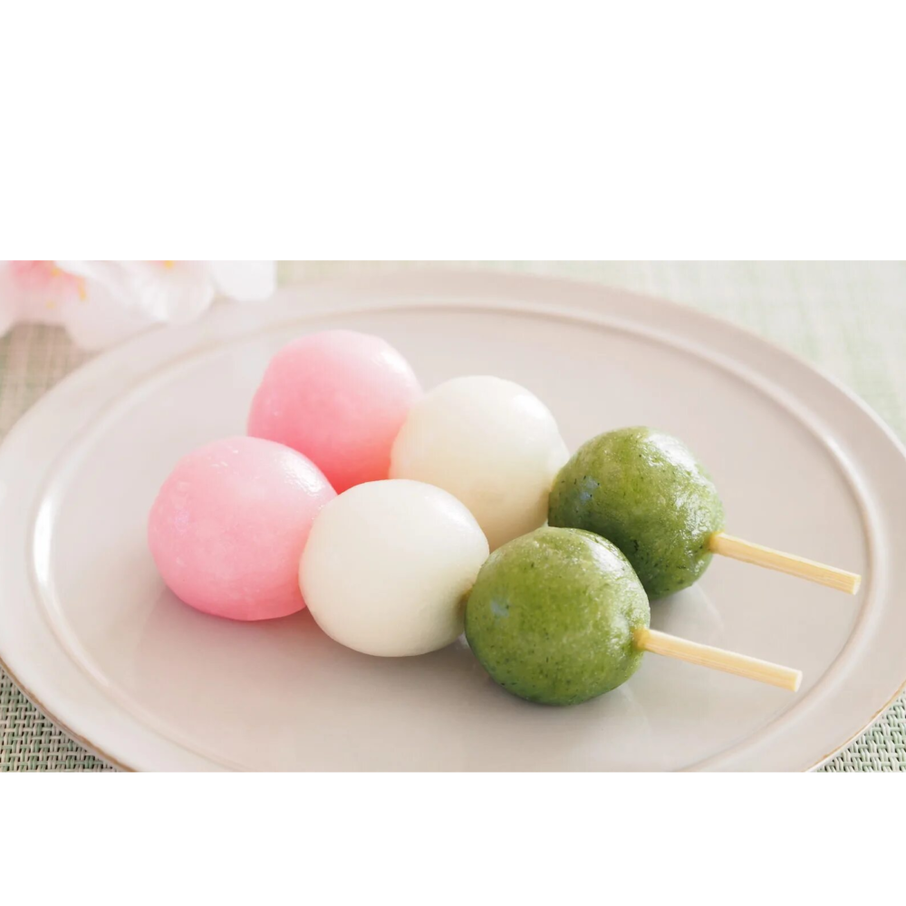

 Ингредиенты:
- рисовая мука 250г
- вода негазированная 125 мл
- Желатин 1шт.
- сахар по вкусу
Для соуса понадобится:
- вода 100 мл
- сахар 50 г
- Соевый соус (по вкусу)
- Крахмал 20г
Способ приготовления:
- Налить воду в емкость, поставить на средней интенсивности нагрев, довести до кипения;
- В отдельную емкость засыпать весь объем рисовой муки, после чего влить в нее воду, постоянно помешивая, чтобы не образовывалось комочков;
- Получившуюся массу следует перемешать до получения однородного состава, похожего по консистенции на густую сметану.
- После этого потребуется провести термическую обработку – сварить на пару заготовки (15 минут). Можно использовать пароварку или водяную баню для этой цели.
Способ приготовления соуса:
- Потребуется в отдельной емкости смешать воду и крахмал (оставить настаиваться на 10 минут);
- Затем в этот состав необходимо добавить соевый соус, а после сахар, перемешать;
- Соус потребуется нагреть, не доводя до кипения.
- В процессе нагрева соус нужно помешивать (лучше всего применять для этой цели венчик).
В конце рисовые шарики заливаются сверху получившимся соусом.